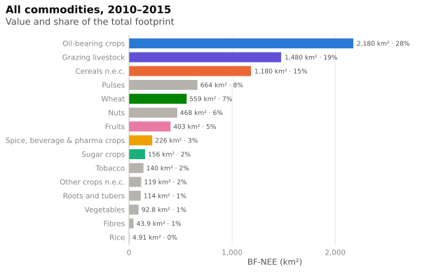
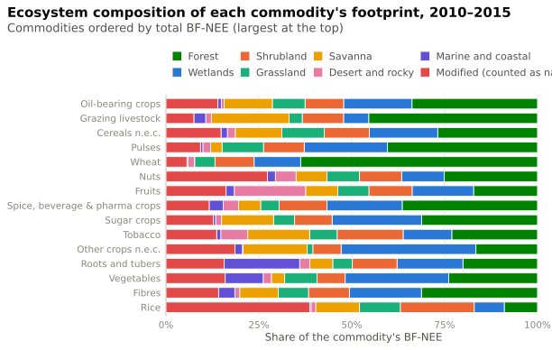

Commodities
Which expanding crops carry the footprint – and in which ecosystems
Each country’s agriculture-constrained loss on cropland is distributed to the crops that expanded in that country and period (S_c, method), weighted with the share of their production that ends up in German final demand (P_c). The loss linked to intensive pasture is attributed to Grazing livestock (method).
Footprint by commodity

Commodities × ecosystems
Because the constrained loss keeps its ecosystem class, every commodity’s footprint can be split by ecosystem group: \text{BF-NEE}_{c,g} = \sum_r R_{r,g}\,S_{c,r}\,P_{c,r}.

Which crops expand?
Commodity shares S_c come from the increase in crop area. This is the summed increase of each crop across all valid countries (decreases are not counted).